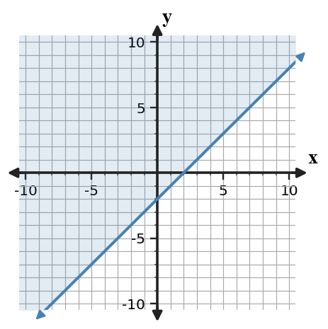
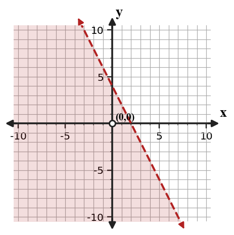

Graphing Linear Inequalities
Mathematical idea: A linear inequality uses a boundary line and a shaded half-plane to show all points that make the inequality true.
Today you will decide whether boundaries are solid or dashed, use test points to choose shading, and critique inequality graphs. You will connect symbols to the solution region on a coordinate plane.
Learning Target
Learning Target: Students will graph and interpret linear inequalities.
I can statements
- I can construct a boundary line and shaded region for a linear inequality.
- I can use test points to interpret which region satisfies an inequality.
- I can critique a graph of a linear inequality using the boundary, shading, and solution region.
What's To Come
This is a long-range preview for future lessons. Do not solve it today. Instead, annotate it individually. Circle anything familiar, underline symbols or directions that seem important, and write notes about what information you think will be needed later.
As you annotate, ask yourself: What parts (words, symbols, graphs) do you KNOW? What parts look FAMILIAR? What parts look like jibberish?
A poster claims to model “students need at least 20 total practice problems, with $x$ online problems and $y$ paper problems” using $x+y\lt 20$ and a dashed boundary.

- Revise the inequality so it matches the phrase “at least.”
- Describe the correct boundary and shading.
- Give one point that should be feasible and one point that should not.
Intro
Directions
Read the introduction aloud with a partner or in a small group. As you read, annotate the text by highlighting important ideas, circling key vocabulary, and writing short notes about connections, questions, or predictions in the margins.
Paragraph A. A linear inequality begins with a related boundary line. If the symbol includes equality, such as $\le$ or $\ge$, the boundary line is solid because points on the line are included. If the symbol is $\lt$ or $\gt$, the boundary is dashed because points on the line are not included.
Paragraph B. The shaded region shows all the points that satisfy the inequality. A test point, often $(0,0)$ when it is not on the boundary, is substituted into the inequality. If the test point makes the inequality true, shade the side containing that point; if not, shade the other side.
Paragraph C. Two inequalities can share the same boundary but ask for opposite sides. For example, $y\ge x+1$ and $y\le x+1$ use the same line, but their solution regions are on different sides. This means the symbol controls more than the line style.
Paragraph D. Useful representations include the inequality, the boundary line, the shaded half-plane, test points, and solution-region statements. A good graph makes both the boundary type and shaded side clear.
Paragraph E. In situations, inequalities model limits such as budgets, minimum scores, or maximum amounts. The shaded region represents all possible choices that meet the constraint, not just one answer.
Stop and Discuss
- When should a boundary line be solid?
- How does a test point help decide the shaded side?
- Why can the same boundary line have different solution regions?
The boundary line comes from replacing the inequality symbol with an equals sign.
$$y\ge x-2 \quad \Rightarrow \quad y=x-2$$| Symbol | Boundary | Why |
|---|---|---|
| $\ge$ or $\le$ | solid | points on the line are included |
| $\gt$ or $\lt$ | dashed | points on the line are not included |

The graph uses a solid line because equality is allowed.
Example 1: Boundary type from the symbol
Consider the inequality $y\le -3x+5$.
- Should the boundary line be solid or dashed?
- Write the equation of the boundary line.
- Explain how the symbol tells whether points on the boundary are solutions.
You Try It 1: Another boundary decision
Consider the inequality $y\gt x-8$.
- Should the boundary line be solid or dashed?
- Write the equation of the boundary line.
- Explain whether a point on that line should be included.
Stop and Discuss
- Which symbols include the boundary line, and which symbols do not?
A test point tells which side of the boundary satisfies the inequality.
$$\text{For } y\lt -2x+4, \text{ test } (0,0):\quad 0\lt -2(0)+4 \text{ is true.}$$| Test point | Result | Action |
|---|---|---|
| $(0,0)$ | $0\lt 4$ is true | shade the side containing $(0,0)$ |

Because the test point works, it is part of the solution region.
Example 2: Graph a linear inequality
Graph the inequality $y\ge 2x-4$.
- Write the boundary line and decide whether it is solid or dashed.
- Use a test point to decide which side to shade.
- Name one point that is a solution and one point that is not a solution.
You Try It 2: Graph another inequality
Graph the inequality $y\le -x+5$.
- Draw the boundary line with the correct style.
- Use a test point to choose the shaded side.
- Name one satisfying point and one non-satisfying point.
Stop and Discuss
- Why is a test point useful even if you already graphed the boundary correctly?
Example 3: Boundary and shading together
Identify the boundary line and graph the solution region for $y\lt x+3$.
- State the boundary equation and line style.
- Choose a test point and show the substitution.
- Explain whether a point on the boundary line is a solution.
You Try It 3: Check boundary inclusion
Graph the solution region for $y\lt -x+1$.
- State the boundary equation and line style.
- Test $(0,0)$ and decide where to shade.
- Explain whether $(1,0)$ is a solution if it lies on the boundary.
Stop and Discuss
- How did the boundary line style affect whether a boundary point counted as a solution?
To critique an inequality graph, check the boundary type and shaded side separately.
$$y\lt -x+4$$| Decision | Correct check |
|---|---|
| Boundary | $\lt$ means dashed, not solid. |
| Shading | Test $(0,0)$: $0\lt 4$ is true, so shade the side with $(0,0)$. |

A graph can have the right boundary equation but still be wrong if either the line style or shading is wrong.
Example 4: Critique a shaded graph
A student graphs $y\gt -2x+6$ with a solid boundary and shades below the line.
Student claim: "The graph is correct because the boundary has slope $-2$ and intercept $6$."
- Identify the correct boundary equation and line style.
- Use a test point to decide whether the shading should be above or below.
- Revise the student's claim so it checks both the boundary and the solution region.
You Try It 4: Fix another graph description
A student graphs $y\le \frac{1}{2}x-3$ with a dashed boundary and shades above the line.
Student claim: "Dashed is okay because this is an inequality."
- Identify the boundary style error.
- Use a test point to decide whether the shading should be above or below.
- Write a corrected description of the graph.
Stop and Discuss
- When critiquing, why should you check the line style and the shaded side as two separate decisions?
Summary
A linear inequality graph shows all points that satisfy a constraint.
The boundary line comes from the related equation; the inequality symbol decides whether the boundary is solid or dashed and the test point helps choose the shaded side.
A common error is drawing the correct line but using the wrong line style or shading the wrong half-plane.
Strong understanding means you can justify the boundary, shading, and solution region using both symbols and test points.
Common Mistakes
- Using solid for every boundary. Why it is tempting: equations usually use solid lines. What to check instead: look for equality in $\le$ or $\ge$.
- Shading based only on the symbol direction. Why it is tempting: above and below feel tied to $\gt$ and $\lt$. What to check instead: use a test point when unsure.
- Testing a point on the boundary. Why it is tempting: the origin is convenient. What to check instead: choose a point not on the boundary.
- Forgetting vertical or horizontal cases. Why it is tempting: most lines are written as $y=mx+b$. What to check instead: identify the boundary equation first.
- Calling one point the answer. Why it is tempting: test points are memorable. What to check instead: describe the entire shaded region.
Optional Future Task Reflection
Look back at the future task. Do not solve it yet. Highlight one part that makes more sense now than it did at the beginning. Circle one part that still feels unfamiliar. Write one sentence about what representation you would look at first.
For $y\ge 2x-1$, should the boundary line be solid or dashed?
Graph the inequality $y\ge x-3$.
What is one idea about graphing linear inequalities you understand better now than at the start of class? Write at least one complete sentence.
What is one thing about graphing linear inequalities you still want to understand or practice? Be specific — name the idea, not just "everything."